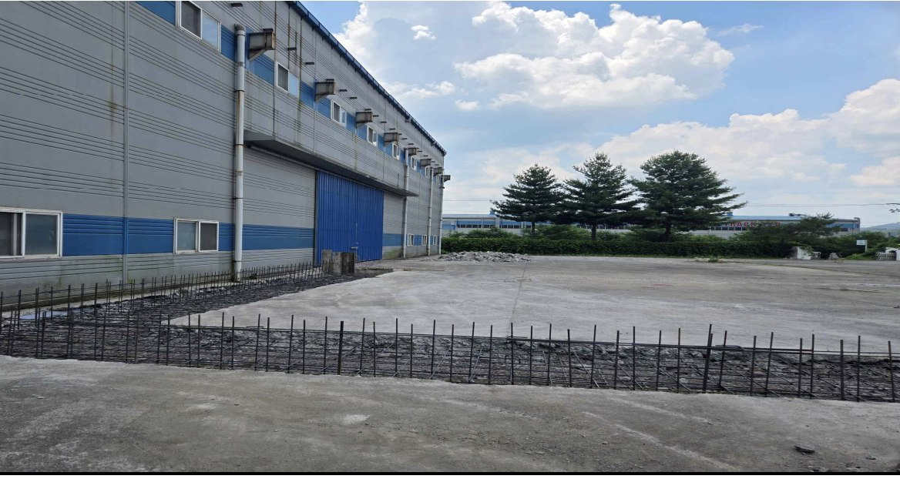
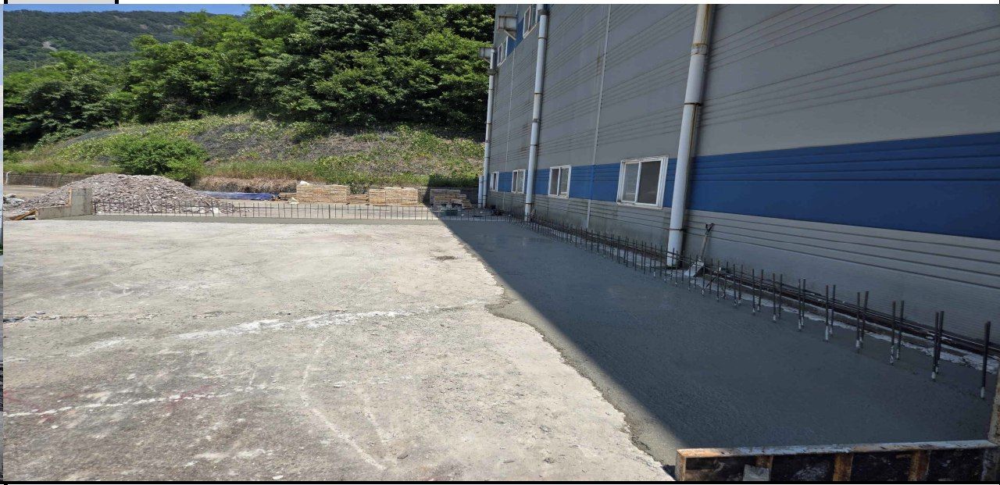
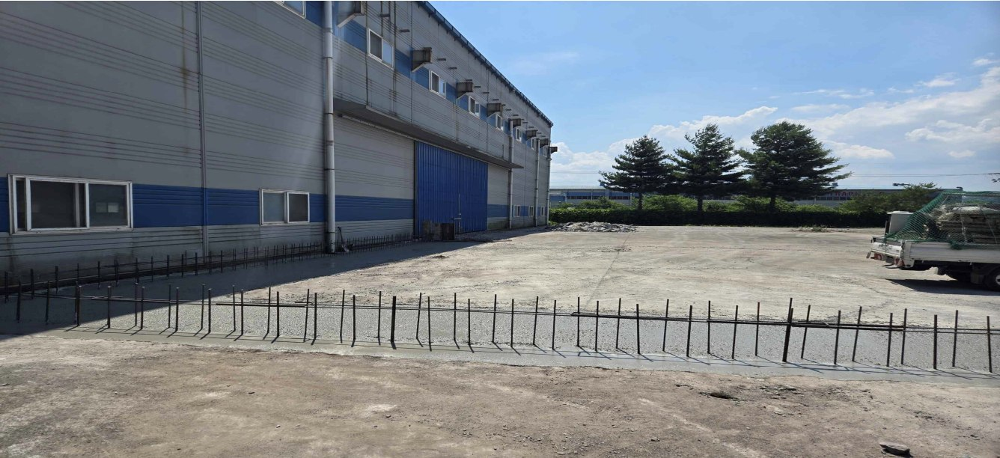
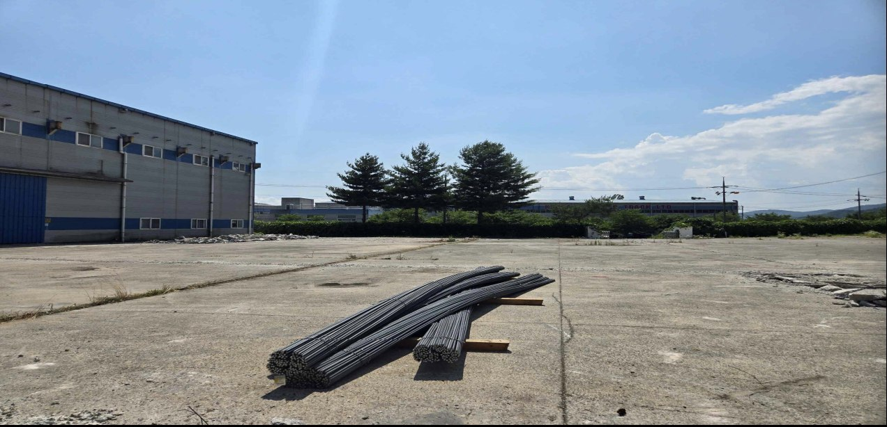

1
배근 확인
옹벽 기초와 저판 구간의 철근 배근이 확인되었다.
지수통합선별공장 옹벽 구간에서 기초·저판 철근 배근 후 콘크리트 타설을 완료하고, 후속 벽체 배근을 위한 2차 철근 반입까지 확인했다.

구조체 시공 기준 구간이 확보되었고, 다음 공정은 벽체 철근·거푸집 품질 확인으로 이동한다.
금일은 옹벽 기초 및 저판 철근 배근 후 콘크리트 타설을 진행하고, 후속 벽체 배근 작업을 위한 2차 철근 반입을 완료한 날이다.
사진 4건과 제공 설명을 기준으로 정리했다. 수량, 규격, 타설량, 시험성적은 현장 원자료 확인이 필요하다.
2026-06-11 철거·기초 착수 이후, 금일 작업은 후속 벽체 공정을 위한 기준면을 만든 단계다.
옹벽 기초와 저판 구간의 철근 배근이 확인되었다.
기초·저판 콘크리트 타설로 후속 벽체 작업 기준이 확보되었다.
장거리 구간의 타설 완료 전경이 확인되어 이어치기 관리가 중요하다.
2차 철근 반입으로 다음 공정 투입 자재가 현장에 준비되었다.
| 구분 | 내용 | 상태 | 후속관리 |
|---|---|---|---|
| 철근배근 | 옹벽 기초 및 저판 철근 배근 | 완료/확인 | 피복, 정착, 겹침이음 및 벽체철근 위치 확인 |
| 콘크리트 | 기초 및 저판 콘크리트 타설 | 완료/확인 | 타설면, 레벨, 초기 양생관리 |
| 연속구간 | 저판 타설 완료 구간 전경 확인 | 확인 | 이어치기, 거푸집 간섭 확인 |
| 자재입고 | 2차 철근 현장 반입 및 야적 | 완료 | 규격·수량 검수, 오염·변형 방지 |
각 이미지는 공종, 작업 확인, 관리 포인트로 재구성했다.

옹벽 기초부와 저판 구간 철근 배근 진행. 벽체 철근과 저판 철근의 연속 배근 상태 확인.
관리: 피복두께, 정착길이, 겹침이음, 이물질 제거
옹벽기초·저판·자재
배근 완료 구간에 기초 및 저판 콘크리트 타설. 벽체 철근 돌출부를 유지한 상태로 진행.
관리: 평활도, 재료분리 방지, 철근 위치 변형 여부
옹벽기초·저판·자재
저판 콘크리트 타설 완료 구간 전경 및 연속 시공 상태 확인. 후속 벽체 기준 구간 확보.
관리: 이어치기, 레벨 편차, 철근 수직도, 거푸집 간섭
옹벽기초·저판·자재
후속 옹벽 벽체 배근 등에 사용할 2차 철근 현장 반입 및 야적 완료.
관리: 규격·수량 검수, 받침목 적치, 오염·변형 방지
옹벽기초·저판·자재노드는 짧게 유지하고, 상세 판단은 본문과 검토 질문에서 다룬다.
상세 일자는 현장 일정표 확정 후 보정한다. 현재는 실행 게이트 중심의 검토용 배치다.
콘크리트 타설 후 초기 양생관리와 표면 손상 방지가 필요하다.
벽체 철근 돌출부의 위치 변형, 수직도, 간격 이상 여부를 확인한다.
후속 거푸집 설치 전 저판 레벨과 이어치기 구간을 점검한다.
받침목 유지, 흙·수분 오염 방지, 규격별 분리 적치가 필요하다.
| 액션 | 목적 | 검토자 메모 |
|---|---|---|
| 옹벽 벽체 철근 배근 및 검측 준비 | 후속 구조체 품질 기준 확보 | 검측 항목과 사진 보관 기준 확인 |
| 거푸집 설치 전 저판 양생 상태 확인 | 변형·손상·레벨 문제 예방 | 타설면 상태와 이어치기 위치 점검 |
| 2차 철근 규격·수량 확인 | 사용 구간별 반출 계획 수립 | 자재표, 반입증, 현장 적치 상태 대조 |
| 타설·자재 반입 사진 보관 | 준공·검측 자료로 활용 | 파일명과 공종 태그 정리 |
금일은 지수통합선별공장 옹벽 구간의 기초 및 저판 철근 배근을 완료하고 콘크리트 타설을 진행하였다. 타설 완료 구간은 후속 벽체 배근과 거푸집 설치의 기준이 되는 구간이며, 2차 철근도 현장에 반입되어 다음 공정 자재 준비가 완료되었다. 향후 양생 상태, 벽체 철근 위치, 거푸집 설치 간섭, 철근 야적 품질관리를 중점 확인한다.
검토가 끝났다면 아래 내용을 복사해 AI에게 수정 지시로 전달할 수 있다.
Leave a public GitHub comment or reaction below.